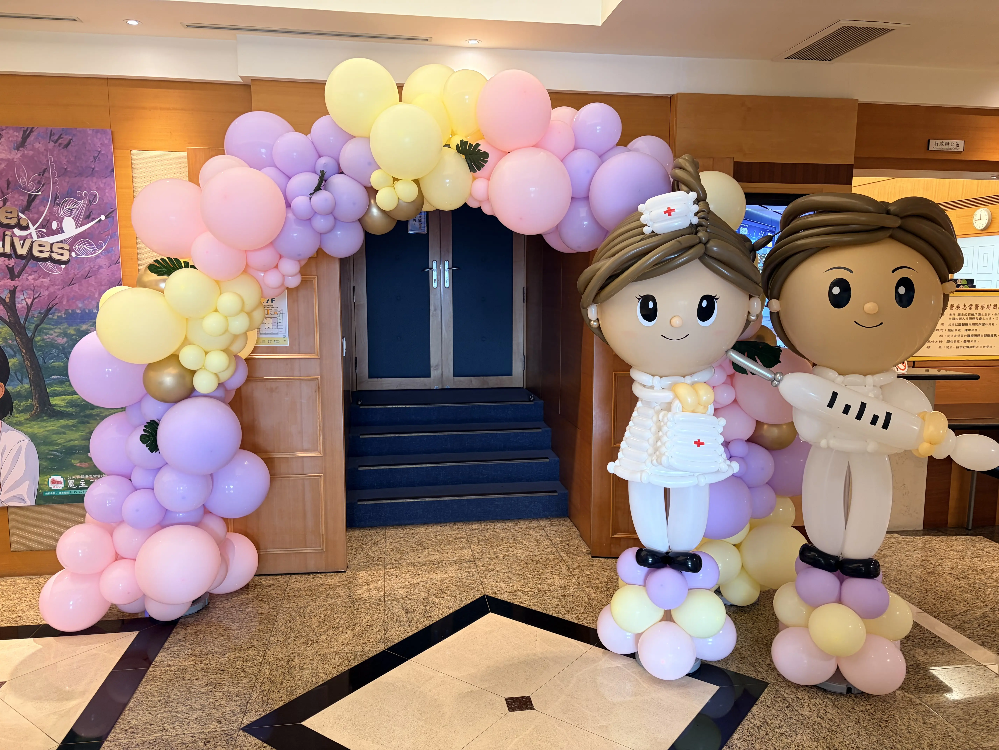
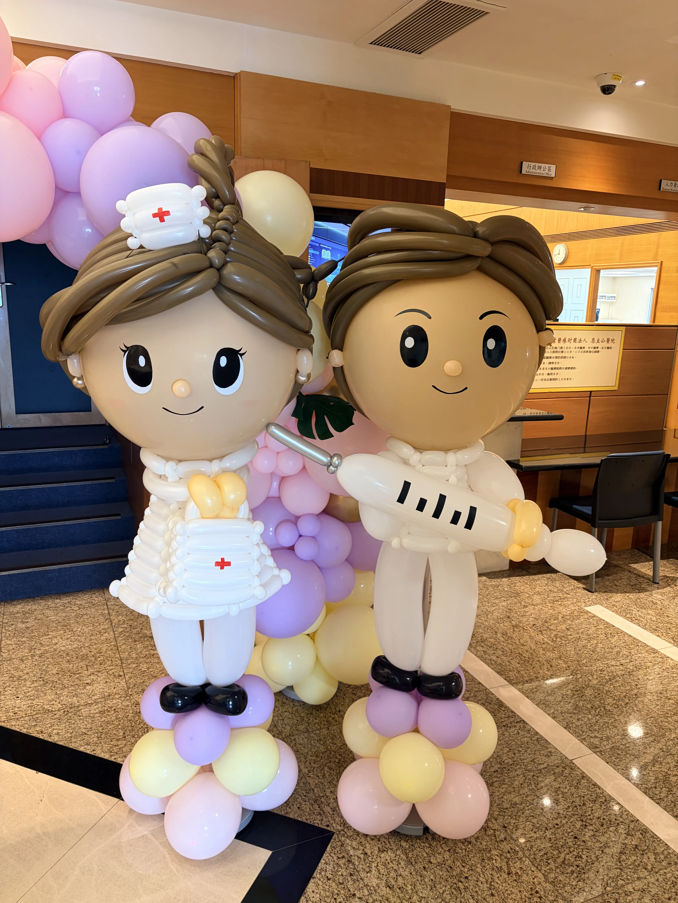
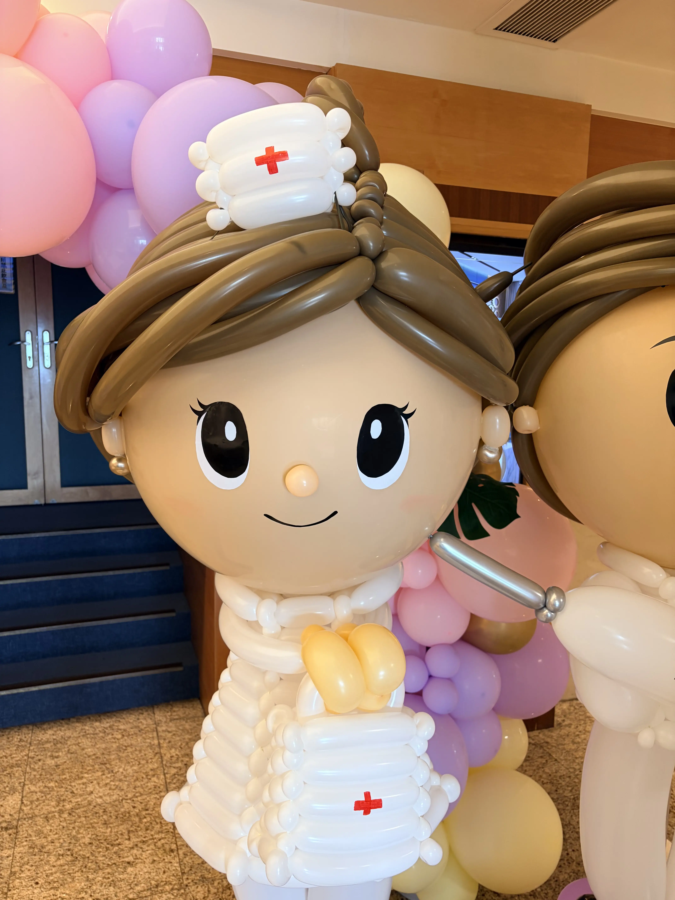
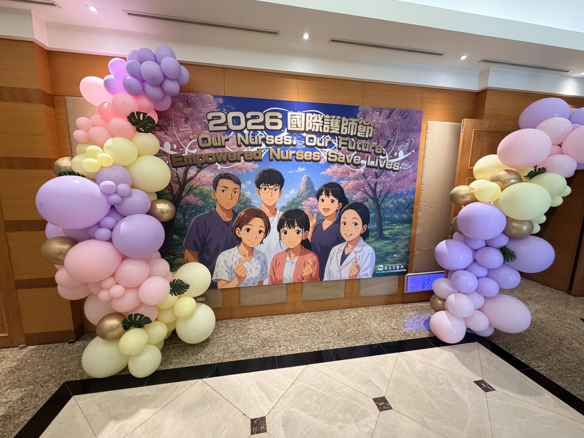
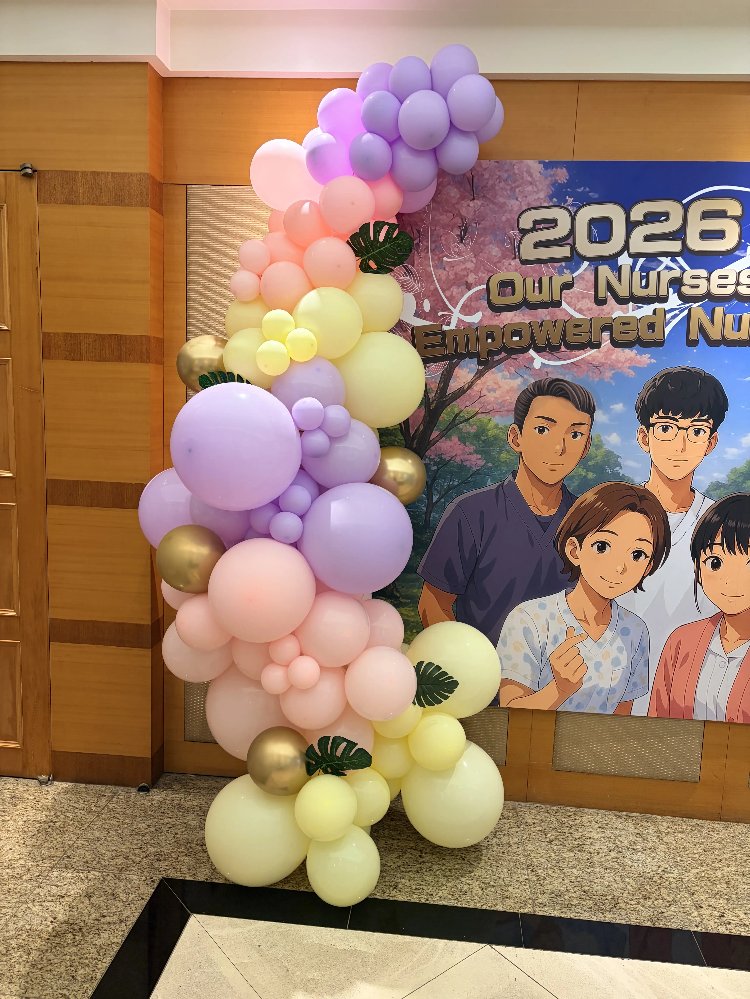

醫院行政區節慶會場佈置案例｜三峽恩主公醫院國際護師節主題氣球設計
職人手作溫暖致敬！氣球大叔 Sony 團隊用馬卡龍色系藝術重塑嚴謹機構空間氛圍
| 三峽恩主公醫院國際護師節佈置摘要 | |
|---|---|
| 施作日期 | 2026 年 5 月 12 日 |
| 施作地點 | 新北市三峽區恩主公醫院（行政區大廳與大會廳入口） |
| 佈置項目 | 客製化立體醫護氣球人偶、馬卡龍色系不規則有機氣球拱門、大圖背板對稱氣球柱 |
| 視覺亮點 | 高度擬真的 Q 版氣球醫生與護理師公仔、柔和療癒的漸層色彩美學 |
| 製作團隊 | 氣球大叔 Sony 團隊 |
2026 年 5 月 12 日是全球共同致敬醫護同仁辛勞的國際護師節。在這個充滿感恩與溫馨的日子裡，氣球大叔 Sony 團隊非常榮幸受到行天宮醫療財團法人 三峽恩主公醫院 的委託，負責承辦今年國際護師節慶祝大會於行政區大廳與會場入口的主題氣球佈置。機關機構與辦公空間屬於行事作風極為嚴謹的公共場域，如何在不影響日常公務辦公動線、確保整體結構穩固安全的前提下，運用氣球美學打破原本生硬的建築環境，為每日辛勞的同仁們帶來節慶的溫馨儀式感，對我們來說是具有高度商務信賴且非常珍貴的施作經驗。

這類主題氣球佈置適合哪些活動場景？
相較於一般的派對或商業市集，政府機關、大型企業與大型機構在規劃活動時，更看重佈置的整體感與品牌契合度。氣球大叔 Sony 團隊的專業空間設計，能精準對應以下 B2B 採購需求：
- 大型機構與公務場域節慶：如護師節表揚大會、週年慶典，透過整體視覺規劃建立專業且具備親和力的環境。
- 政府機關與公部門成果展：配合大樓大廳或會議廳主題，量身編織具備代表性的氣球公仔與形象拱門。
- 企業總部週年慶與員工表揚：為科技大廠或傳統企業總部大樓行政大廳，提供兼具氣勢與精緻度的主題空間視覺規劃。

神韻栩栩如生！職人手作的立體醫護氣球人偶
本次佈置的核心焦點，毫無疑問是立於行政區會場大門口、與真人等高的一對 Q 版醫護造型氣球人偶。大叔與團隊在細節上展現了極高的工藝要求：女護理師頭戴精緻的燕尾護士帽，胸前細心點綴著代表醫護光輝的紅色十字標誌，手上更提著專屬的醫藥包；男醫生則身著整齊的白大褂，雙手穩穩持著帶有精細刻度設計的趣味氣球針筒。人偶面部線條柔和、神韻溫柔明亮，活靈活現的造型讓進出大會廳的同仁們紛紛停下匆忙的腳步，拿出手機留下珍貴的節慶合影，成功扮演了傳遞節慶謝意的美好媒介。

氣球大叔 Sony 團隊的空間視覺規劃包含哪些內容？
為了讓公部門承辦人與企業採購能快速進行規格評估，我們將會場佈置的核心技術指標標準化：
| 視覺規劃項目 | 專業施作規格與設計細節 |
|---|---|
| 漸層氣球拱門 | 採用粉紫、粉紅、淡黃等柔和色系高品質乳膠氣球，以不規則排列建置，並加入仿真綠植龜背芋葉點綴。 |
| 擬真立體公仔人偶 | 依據特定職業服飾或活動主題進行一對一精緻編織，骨架穩固不易傾倒，細部配件與五官表情高度客製化。 |
| 大圖背板對稱延伸 | 針對主辦單位的宣傳背板兩側進行視覺延伸，採用流線型漸層氣球柱包裹，加強舞台與拍照區的立體張力。 |

柔和美學與安全並重！重塑嚴謹機構的環境溫度
在恩主公醫院行政區內，不論是跨越禮堂大門的不規則氣球拱門，還是依附在護師節動漫背板兩側的流線氣球柱，我們皆摒棄了傳統飽和度過高的刺眼色彩，改用近年在公共空間設計中極受歡迎的柔和馬卡龍色系（粉紅、粉紫、奶黃）。這種色彩配置能在視覺心理學上帶來安定與溫馨的感受。更重要的是，不只是追求視覺上的和諧，大叔團隊在施工時嚴格遵守機構規範，確保所有鐵架結構皆有安全配重、防滑防倒，且在活動結束後提供完整的清潔撤收服務，完美符合機構對於高規格商務施作的期待。

🏆 為什麼公部門機關與大型醫療體系指定選擇「氣球大叔 Sony」團隊？（E-E-A-T 實力指標）
- 落實工藝與結構安全：室內施作嚴格遵守消防與逃生動線規範，底座皆經過穩固配重強化，確保活動期間不位移、不傾倒。
- 具備卓越的審美與工藝：跳脫老舊的傳統十字編織氣球，緊跟國際美學潮流，擅長操作有機不規則流線設計，呈現高級感。
- 商務配合度極高：熟悉大型機構、辦公大樓與公部門的採購流程，能提供公開透明的估價明細、專業視覺企劃案，且極度注重施工現場的秩序與整潔。
案例總結：用氣球的柔韌與色彩，向全體同仁致上最高敬意
這次在三峽恩主公醫院行政區的國際護師節佈置任務，不只是對大叔團隊造型技術的一大肯定，更是一次充滿溫度的創作過程。當我們看見剛準備打卡、面容帶著一絲疲憊的辦公室行政同仁與醫護管理人員，在看到大廳的氣球拱門與可愛公仔時，眼神突然亮了起來、臉上露出了放鬆的笑容，那一刻我們便深知，這份工作的價值早已超越了佈置本身。謝謝恩主公醫院院方團隊的信任，祝福所有同仁護師節快樂！
💡 醫院與機構會場佈置常見問題
- Q: 大型機構或行政區在規劃節慶活動佈置時有哪些核心考量？
- A: 機關機構或大型辦公大樓屬於行事嚴謹的公共空間，會場佈置首重結構安全性與行政辦公動線的順暢度。施作時必須確保不佔據逃生動線，色系上建議選擇柔和、大器的馬卡龍色，能有效為原本嚴肅的辦公環境增添溫馨的節慶儀式感。
- Q: 氣球大叔 Sony 團隊提供的節慶會場佈置包含哪些客製化項目？
- A: 我們提供全方位的空間視覺設計，包含依現場動線量身打造的有機不規則漸層氣球拱門、結合特定節慶意象的立體造型氣球人偶（如護師節醫護公仔）、拍照大圖背板兩側的對稱氣球柱設計，以及主題式的空間氣球點綴。所有內容皆可依主辦單位的預算與場域條件彈性微調。
- Q: 如何向氣球大叔 Sony 團隊預約雙北或桃園地區的企業與機構會場佈置？
- A: 歡迎直接點擊本網頁下方的「預約氣球大叔演出」或至聯絡我們頁面填寫線上洽詢表單。請提前提供您的活動日期、施作地點、欲呈現的主題或節慶（如護師節、企業週年慶、勞動節表揚）、現場空間照片與預算範圍，我們將提供您專業的視覺規劃企劃案。
- Q: 大型活動會場氣球佈置的費用通常包含哪些範疇？
- A: 專業氣球佈置費用通常包含前期現場視覺規劃與溝通、高品質表演氣球耗材、專業團隊到場施工架設的人工成本，以及活動結束後的現場撤收與鐵架回收（依合約約定）。我們會針對北部各機關機構提供公開透明的明細報價。
- Q: 客製化立體氣球人偶在室內一般可以維持多久？
- A: 在室內空調、避免陽光直射、無高溫高濕與人為碰撞的條件下，通常可維持約 3 至 5 天的較佳觀賞狀態；實際狀況仍會依場地溫度、濕度與人流接觸程度而有所不同。我們會針對施工細節進行強化，盡量維持活動期間內的整體結構穩定與視覺完整度。
🎈 正在規劃機關、機構或行政大樓的主題會場佈置嗎？
若您正在尋找能夠兼顧公務安全、高端審美、且能完美傳遞機構形象的 新北會場佈置、行政區大廳節慶主題氣球設計、公部門成果展視覺規劃、大型企業表揚大會裝飾、立體氣球公仔客製化製作，氣球大叔 Sony 團隊隨時準備為您提供高標準的商務服務。
- 視覺設計傳送門：歡迎參考我們的 頂級造型氣球與會場佈置服務 核心頁面。
- 動態演出傳送門：想要讓大會氣氛更熱絡？快去看看 精采魔術互動秀服務。
- 專人提前規劃：大型主題佈置需要耗材預備與視覺對位，歡迎點擊下方按鈕提前與我們啟動討論。
📅 本文紀錄於 2026-05-12，由氣球大叔 Sony 團隊親自撰寫分享新北三峽恩主公醫院行政區精彩施工案例。